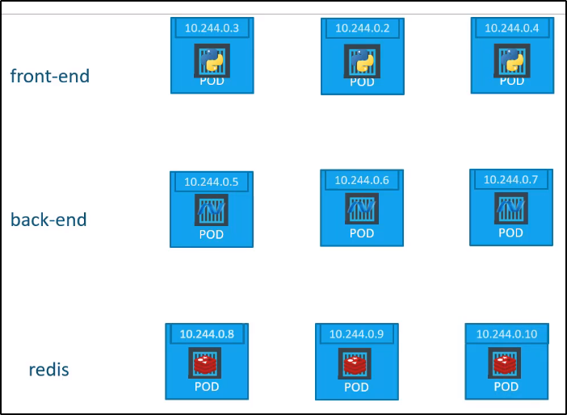

Service - ClusterIP
Generalmente, una full-stack web application possiede diversi PODs,
dove ognuno possiede una propria parte dell'applicazione.

Ogni servizio ha bisogno di comunicare con altri servizi.
Il Fronte-end col back e il back con Redis o i DB.
Quindi: come connettiamo i POD?
Ogni POD ha un suo indirizzo IP, come possiamo vedere:

Il problema è che ogni POD ha un proprio IP e potrebbe essere
distrutto e ricostruito, con un altro IP, in qualsiasi momento.
Per questo, non puoi affidarti a questi indirizzi IP per la comunicazione interna.
Inoltre: se necessito un POD del Back da Front, quale dei 3 è scelto?
Kubernetes offre un Service per raggruppare questi PODs e contattarli tramite un interfaccia.
Il POD scelto, in caso di richiesta, viene scelto in modo casuale.

Questo ci permette di deployare in modo semplice un applicazione
basata su microservizi in Kubernetes, sul cluster.
Adesso ogni layer può scalare o muoversi come vuole, senza impattare
la comunicazione tra gli altri servizi.
Ogni Service ha un IP assegnato all'interno del cluster e questo
è il nome usato da altre path per accedere al servizio.
NB: Quando dichiari un Service, se non specifici il "type", lo considererà come un ClusterIP.
E' il tipo di service di default, se non lo specifichi!
Dobbiamo dargli solo un nome, porte target e di base, ed i selector
quelli del POD da scegliere!